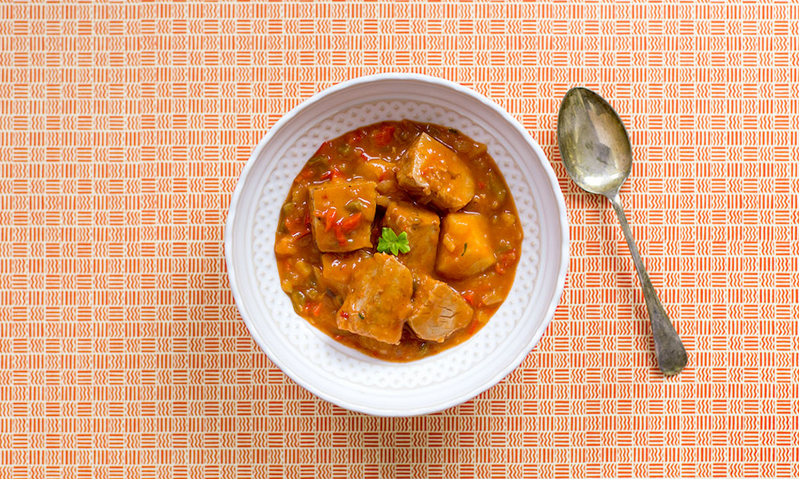

Home
Spanish
Japanese
Cajun
Cuban
Puerto Rican
Spanish Main Recipe
BONITO MARMITAKO (BASQUE TUNA STEW)

INGREDIENTS LIST
For the fish stock:
Tuna bones - cleaned
1 Leek
2 Carrots
1 clove Garlic - peeled
1 Spring onion
1 small bunch Fresh parsley
150 ml White wine
For the marmitako:
500 g Tuna loin - boneless and gutted
2 small Green pepper - finely chopped
1 small Brown onion - finely chopped
5 large Potatoes - broken into large pieces
4 Choricero pepper - alternatively you can use ñoras
0.5 tsp Cayenne flakes
1 tsp Sweet pimenton
150 ml White wine
Extra virgin olive oil
Fresh parsley - finely chopped
Salt
Comment Form
is loading comments...